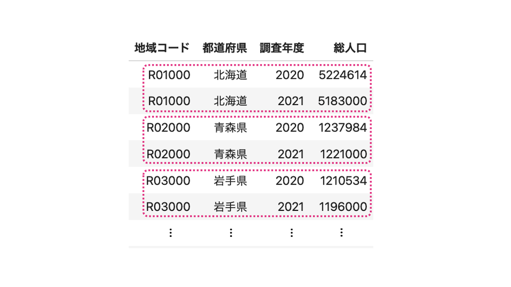

4. 単純質問#
Show code cell source
import os
if not os.path.isfile('data/SSDSE.db'):
os.makedirs('data', exist_ok=True)
if not os.path.isfile('download_SSDSE.py'):
!wget https://raw.githubusercontent.com/hontolab-courses/database-lecturenote/main/content/sql/download_SSDSE.py
import download_SSDSE
Show code cell source
%load_ext sql
%config SqlMagic.feedback = 0
%sql sqlite:///data/SSDSE.db
データベースからデータを引っ張ってくるなど，データベースを操作するには具体的なツールが必要となる． SQL(Structured Query Language) は関係データベースの操作に特化した言語である． SQLはISOによって国際的に標準化されている． よく用いられる関係データベース管理システム（RDBMS）としてMySQLやPostregreSQL，Oracle Database，Microsoft SQL Serverなどが挙げられるが，どのRDBMSにもSQLは実装されている．
SQLを使うことで，関係データベースのユーザは
データの登録（Create）
データの読み出し（Read）
データの更新（Update）
データの削除（Delete）
が可能となる[1]． なお，本教材のターゲットはデータ分析人材の卵であることから，本教材では関係データベースからデータの読み出しに焦点を当ててSQLの説明を行う．
SQLはデータベースに対する問い合わせ言語であって，プログラミング言語ではない． そのため，プログラミング言語に比べて覚えることは少なく，問い合わせ内容を英語に近い形で書き下すことができるよう設計されている． データ分析人材はソフトウェアを開発することが目的ではないから高度なプログラミング能力を持つ必要は必ずしもないが，関係データベースに納められた大量のデータを自由自在に扱うためにもSQLの習得は必須である．
Note
SQLの読み方
SQLの読み方は「エス・キュー・エル」である．SQLは1970年代にIBM社が開発したデータベース管理システムSystem Rの操作言語SEQUELを起源としている．関係データベースに熱狂していた世代の人の中には，SEQUELの名残でSQLのことを「シークエル」と呼ぶ人もいる．
Warning
SQLにも方言がある
RDBMSによって，SQLで使用できる関数が異なったりすることがある．特にSQLiteについては，簡易的なRDMBSということもあり，他のRDBMSでは実装されている機能や関数が実装されていない場合がある．自分が書いたSQL文がうまく動作しない場合は，マニュアルに当たってみよう．
4.1. SQLと関係データモデルの比較#
SQLは関係データベースを操作する言語であり，それが扱うデータモデルは関係データモデルを実用的に拡張したものである． 「実用」のSQLデータモデルと「理論」の関係データモデルでは，同様の概念が異なる用語で定義されている． 以下はSQLと関係データモデルの用語の比較である．
関係データモデル |
SQL |
|---|---|
関係（リレーション; relation） |
表（テーブル; table） |
タプル（tuple） |
レコード or 行（row） |
属性（attribute） |
列（カラム; column） |
定義域（ドメイン; domain） |
データ型 |
また，関係データモデルでは各属性はドメインで定義された値をもつが， 現実的にはある属性の値が存在しない，あるいは未定義（不明）のケースがありえる． そのような状況では，特殊な値であるNULL値（ヌルと読む）を用いる．
4.2. 基本形#
関係データベースに対する最も典型的な問い合わせ要求は，
特定の表（table，テーブル） から
列（column，カラム） が特定の条件を満たす行（row）[2] を見つけ出し
結果を表形式で出力する
ことである．問い合わせのために記述するSQL文のことをクエリ（query） と呼ぶ．
SQLによる代表的なクエリは，以下の形式のSELECT文である．
SELECT
都道府県名
FROM
都道府県
WHERE
人口 >= 5000000;
上記クエリは，
「都道府県」テーブルから「人口」という列の値が500万以上である行を見つけ，その行の列「都道府県名」を出力してください
という問い合わせ要求を表現したものである．
SELECT句を用いて「問い合わせ結果に表示したい情報」，FROM句を用いて「参照したい表」，WHERE句を用いて「表示する際の条件」
を指定している． 上記要求を英語に直してみると，SQL文は問い合わせ要求をできるだけ直感的に表現しようとしていることがお分かりいただけると思う．
上記クエリは単純な例ではあるが，関係データベースからデータを引っ張ってくる問い合わせについては，すべからく下記のようなSELECT句から始まるクエリが用いられる．
SELECT
列名1, 列名2, ...
FROM
参照する表1, 表2, ...
[WHERE 条件]
[GROUP BY 列名1, 列名2, ...]
[HAVING 条件]
[ORDER BY 列名1, 列名2, ...]
[LIMIT 数字];
このうち，問い合わせ結果に表示したい情報を指定するSELECT句，および問い合わせの際に参照するテーブルを指定しているFROM句は必須である．
[ ]で囲まれた箇所については，書かなくてもSQLとして動作する．
なお，SELECTやFROM，WHERE，GROUP BY，HAVING，ORDER BY，LIMITといった句の意味のついては後ほど説明するが，各句はこの順序で使う必要がある．
例えば，HAVING句はWHERE句の後ろに書かない．
また，クエリの末尾にはピリオド（;）をつけ忘れてはいけない．
以後，SQLの基礎について説明する．
説明には，独立行政法人統計センターが公開している教育用標準データセット（SSDSE）の基本素材SSDSE-E（データの解説はこちら）から抜粋・加工したデータ（populationテーブル）を用いる．
以下の通り，populationテーブルには，47ある各都道府県に関する総人口，小学校児童数，中学校生徒数，高等学校生徒数，大学学生数のデータが2021年度，2020年度分入っている．
このテーブルが格納された関係データベースが手元にあると想定して，SQLの使い方を説明する．
| 地域コード | 都道府県 | 調査年度 | 総人口 | 小学校児童数 | 中学校生徒数 | 高等学校生徒数 | 大学学生数 |
|---|---|---|---|---|---|---|---|
| R01000 | 北海道 | 2021 | 5183000 | 231714 | 122742 | 115335 | 79729 |
| R02000 | 青森県 | 2021 | 1221000 | 54460 | 29940 | 30543 | 15419 |
| R03000 | 岩手県 | 2021 | 1196000 | 55597 | 30269 | 29980 | 11340 |
| R04000 | 宮城県 | 2021 | 2290000 | 112246 | 58748 | 55329 | 49580 |
| R05000 | 秋田県 | 2021 | 945000 | 38992 | 21924 | 21448 | 8904 |
| R06000 | 山形県 | 2021 | 1055000 | 49164 | 26969 | 27233 | 11801 |
| R07000 | 福島県 | 2021 | 1812000 | 85322 | 46148 | 45647 | 14385 |
| R08000 | 茨城県 | 2021 | 2852000 | 135782 | 72465 | 71842 | 30147 |
| R09000 | 栃木県 | 2021 | 1921000 | 95315 | 51170 | 49674 | 20496 |
| R10000 | 群馬県 | 2021 | 1927000 | 94185 | 50841 | 48521 | 28772 |
| R11000 | 埼玉県 | 2021 | 7340000 | 363199 | 187395 | 163986 | 109500 |
| R12000 | 千葉県 | 2021 | 6275000 | 306105 | 158265 | 141358 | 106037 |
| R13000 | 東京都 | 2021 | 14010000 | 622820 | 311049 | 301712 | 676964 |
| R14000 | 神奈川県 | 2021 | 9236000 | 451098 | 226599 | 195931 | 171164 |
| R15000 | 新潟県 | 2021 | 2177000 | 103680 | 53720 | 51594 | 27546 |
| R16000 | 富山県 | 2021 | 1025000 | 47818 | 26146 | 26068 | 10857 |
| R17000 | 石川県 | 2021 | 1125000 | 56620 | 30336 | 29764 | 27627 |
| R18000 | 福井県 | 2021 | 760000 | 39236 | 21196 | 20701 | 10065 |
| R19000 | 山梨県 | 2021 | 805000 | 38572 | 20955 | 22717 | 16097 |
| R20000 | 長野県 | 2021 | 2033000 | 101932 | 55189 | 52632 | 17032 |
| R21000 | 岐阜県 | 2021 | 1961000 | 101805 | 54493 | 50563 | 20185 |
| R22000 | 静岡県 | 2021 | 3608000 | 183614 | 98192 | 91613 | 33778 |
| R23000 | 愛知県 | 2021 | 7517000 | 405839 | 209151 | 185920 | 176722 |
| R24000 | 三重県 | 2021 | 1756000 | 90040 | 47567 | 44229 | 14062 |
| R25000 | 滋賀県 | 2021 | 1411000 | 80289 | 41086 | 36673 | 31242 |
| R26000 | 京都府 | 2021 | 2561000 | 119892 | 65187 | 66457 | 143095 |
| R27000 | 大阪府 | 2021 | 8806000 | 422433 | 221610 | 207262 | 228194 |
| R28000 | 兵庫県 | 2021 | 5432000 | 278500 | 143075 | 128298 | 115536 |
| R29000 | 奈良県 | 2021 | 1315000 | 65989 | 35964 | 32530 | 20512 |
| R30000 | 和歌山県 | 2021 | 914000 | 43676 | 23677 | 23349 | 7891 |
| R31000 | 鳥取県 | 2021 | 549000 | 28027 | 14316 | 14321 | 6721 |
| R32000 | 島根県 | 2021 | 665000 | 33162 | 17040 | 17145 | 7263 |
| R33000 | 岡山県 | 2021 | 1876000 | 97981 | 50820 | 49501 | 39071 |
| R34000 | 広島県 | 2021 | 2780000 | 147671 | 75326 | 68044 | 55487 |
| R35000 | 山口県 | 2021 | 1328000 | 65000 | 33721 | 30983 | 18427 |
| R36000 | 徳島県 | 2021 | 712000 | 34181 | 17432 | 16965 | 11761 |
| R37000 | 香川県 | 2021 | 942000 | 49196 | 25629 | 24657 | 9118 |
| R38000 | 愛媛県 | 2021 | 1321000 | 66494 | 33330 | 31473 | 16321 |
| R39000 | 高知県 | 2021 | 684000 | 31226 | 16988 | 17139 | 9257 |
| R40000 | 福岡県 | 2021 | 5124000 | 279290 | 139657 | 123508 | 109860 |
| R41000 | 佐賀県 | 2021 | 806000 | 43903 | 23530 | 22422 | 7776 |
| R42000 | 長崎県 | 2021 | 1297000 | 68834 | 35782 | 34415 | 17083 |
| R43000 | 熊本県 | 2021 | 1728000 | 96415 | 48862 | 44284 | 24580 |
| R44000 | 大分県 | 2021 | 1114000 | 56464 | 29624 | 29300 | 15189 |
| R45000 | 宮崎県 | 2021 | 1061000 | 59639 | 30562 | 28856 | 9736 |
| R46000 | 鹿児島県 | 2021 | 1576000 | 88636 | 45294 | 43029 | 15477 |
| R47000 | 沖縄県 | 2021 | 1468000 | 101342 | 49716 | 43221 | 17882 |
| R01000 | 北海道 | 2020 | 5224614 | 236396 | 123129 | 119773 | 79409 |
| R02000 | 青森県 | 2020 | 1237984 | 55717 | 30206 | 32155 | 15400 |
| R03000 | 岩手県 | 2020 | 1210534 | 56822 | 30388 | 31229 | 11489 |
| R04000 | 宮城県 | 2020 | 2301996 | 114086 | 58381 | 57157 | 49410 |
| R05000 | 秋田県 | 2020 | 959502 | 40192 | 22182 | 22266 | 8884 |
| R06000 | 山形県 | 2020 | 1068027 | 50885 | 27473 | 28281 | 11723 |
| R07000 | 福島県 | 2020 | 1833152 | 86804 | 47108 | 47571 | 14288 |
| R08000 | 茨城県 | 2020 | 2867009 | 139002 | 72868 | 74121 | 30258 |
| R09000 | 栃木県 | 2020 | 1933146 | 96704 | 51558 | 50745 | 20388 |
| R10000 | 群馬県 | 2020 | 1939110 | 96764 | 51167 | 49994 | 28312 |
| R11000 | 埼玉県 | 2020 | 7344765 | 366426 | 186455 | 167972 | 111852 |
| R12000 | 千葉県 | 2020 | 6284480 | 309553 | 156873 | 145920 | 104866 |
| R13000 | 東京都 | 2020 | 14047594 | 619291 | 304405 | 306302 | 673683 |
| R14000 | 神奈川県 | 2020 | 9237337 | 454751 | 224709 | 200230 | 174710 |
| R15000 | 新潟県 | 2020 | 2201272 | 105818 | 53720 | 53114 | 27153 |
| R16000 | 富山県 | 2020 | 1034814 | 48757 | 26565 | 26722 | 10739 |
| R17000 | 石川県 | 2020 | 1132526 | 57706 | 30259 | 30515 | 27369 |
| R18000 | 福井県 | 2020 | 766863 | 40177 | 21170 | 21221 | 10068 |
| R19000 | 山梨県 | 2020 | 809974 | 39153 | 21202 | 23384 | 16126 |
| R20000 | 長野県 | 2020 | 2048011 | 103666 | 55507 | 54280 | 16388 |
| R21000 | 岐阜県 | 2020 | 1978742 | 104118 | 54433 | 52577 | 19827 |
| R22000 | 静岡県 | 2020 | 3633202 | 187254 | 97950 | 94652 | 33809 |
| R23000 | 愛知県 | 2020 | 7542415 | 410482 | 206920 | 190309 | 177380 |
| R24000 | 三重県 | 2020 | 1770254 | 91910 | 47472 | 45829 | 14064 |
| R25000 | 滋賀県 | 2020 | 1413610 | 81054 | 40601 | 37868 | 31100 |
| R26000 | 京都府 | 2020 | 2578087 | 121712 | 65443 | 67847 | 141870 |
| R27000 | 大阪府 | 2020 | 8837685 | 427884 | 220342 | 214115 | 226452 |
| R28000 | 兵庫県 | 2020 | 5465002 | 282758 | 142012 | 132810 | 116299 |
| R29000 | 奈良県 | 2020 | 1324473 | 67172 | 36085 | 33849 | 20655 |
| R30000 | 和歌山県 | 2020 | 922584 | 44501 | 23633 | 24240 | 7524 |
| R31000 | 鳥取県 | 2020 | 553407 | 28238 | 14522 | 14572 | 6736 |
| R32000 | 島根県 | 2020 | 671126 | 33921 | 17119 | 17707 | 7098 |
| R33000 | 岡山県 | 2020 | 1888432 | 98893 | 50683 | 51008 | 39347 |
| R34000 | 広島県 | 2020 | 2799702 | 149529 | 74729 | 69260 | 55652 |
| R35000 | 山口県 | 2020 | 1342059 | 66289 | 33677 | 32051 | 18546 |
| R36000 | 徳島県 | 2020 | 719559 | 34671 | 17397 | 17801 | 11867 |
| R37000 | 香川県 | 2020 | 950244 | 49988 | 25567 | 25477 | 9129 |
| R38000 | 愛媛県 | 2020 | 1334841 | 67607 | 33235 | 32547 | 16254 |
| R39000 | 高知県 | 2020 | 691527 | 31918 | 16999 | 17646 | 9086 |
| R40000 | 福岡県 | 2020 | 5135214 | 280977 | 136797 | 125635 | 110156 |
| R41000 | 佐賀県 | 2020 | 811442 | 44590 | 23275 | 23034 | 7741 |
| R42000 | 長崎県 | 2020 | 1312317 | 69812 | 35687 | 35385 | 17128 |
| R43000 | 熊本県 | 2020 | 1738301 | 96934 | 48218 | 45401 | 24771 |
| R44000 | 大分県 | 2020 | 1123852 | 57705 | 29212 | 29937 | 15278 |
| R45000 | 宮崎県 | 2020 | 1069576 | 60450 | 30211 | 29590 | 9924 |
| R46000 | 鹿児島県 | 2020 | 1588256 | 89738 | 44912 | 43928 | 15432 |
| R47000 | 沖縄県 | 2020 | 1467480 | 101918 | 48763 | 44037 | 17932 |
4.3. 射影（SELECT）#
最も単純なSQLはSELECT句とFROM句のみからなるものである．
射影とはFROM句で指定されたテーブルから，SELECT句で指定した特定の列のデータのみを抽出する操作である．
例題として用いるpopulationテーブルは列として「地域コード」「都道府県」「調査年度」「総人口」「小学校児童数」「中学校生徒数」「高等学校生徒数」「大学学生数」があるが，ケースによって特定の列のデータのみ欲しい場合がある．
そのようなケースで用いるのが射影である．
例えば，populationテーブルから「都道府県」「調査年度」「総人口」の列のデータのみを抽出する場合，SQL文は以下となる．
SELECT
都道府県, 調査年度, 総人口
FROM
population;
| 都道府県 | 調査年度 | 総人口 |
|---|---|---|
| 北海道 | 2021 | 5183000 |
| 青森県 | 2021 | 1221000 |
| 岩手県 | 2021 | 1196000 |
| 宮城県 | 2021 | 2290000 |
| 秋田県 | 2021 | 945000 |
| 山形県 | 2021 | 1055000 |
| 福島県 | 2021 | 1812000 |
| 茨城県 | 2021 | 2852000 |
| 栃木県 | 2021 | 1921000 |
| 群馬県 | 2021 | 1927000 |
| 埼玉県 | 2021 | 7340000 |
| 千葉県 | 2021 | 6275000 |
| 東京都 | 2021 | 14010000 |
| 神奈川県 | 2021 | 9236000 |
| 新潟県 | 2021 | 2177000 |
| 富山県 | 2021 | 1025000 |
| 石川県 | 2021 | 1125000 |
| 福井県 | 2021 | 760000 |
| 山梨県 | 2021 | 805000 |
| 長野県 | 2021 | 2033000 |
| 岐阜県 | 2021 | 1961000 |
| 静岡県 | 2021 | 3608000 |
| 愛知県 | 2021 | 7517000 |
| 三重県 | 2021 | 1756000 |
| 滋賀県 | 2021 | 1411000 |
| 京都府 | 2021 | 2561000 |
| 大阪府 | 2021 | 8806000 |
| 兵庫県 | 2021 | 5432000 |
| 奈良県 | 2021 | 1315000 |
| 和歌山県 | 2021 | 914000 |
| 鳥取県 | 2021 | 549000 |
| 島根県 | 2021 | 665000 |
| 岡山県 | 2021 | 1876000 |
| 広島県 | 2021 | 2780000 |
| 山口県 | 2021 | 1328000 |
| 徳島県 | 2021 | 712000 |
| 香川県 | 2021 | 942000 |
| 愛媛県 | 2021 | 1321000 |
| 高知県 | 2021 | 684000 |
| 福岡県 | 2021 | 5124000 |
| 佐賀県 | 2021 | 806000 |
| 長崎県 | 2021 | 1297000 |
| 熊本県 | 2021 | 1728000 |
| 大分県 | 2021 | 1114000 |
| 宮崎県 | 2021 | 1061000 |
| 鹿児島県 | 2021 | 1576000 |
| 沖縄県 | 2021 | 1468000 |
| 北海道 | 2020 | 5224614 |
| 青森県 | 2020 | 1237984 |
| 岩手県 | 2020 | 1210534 |
| 宮城県 | 2020 | 2301996 |
| 秋田県 | 2020 | 959502 |
| 山形県 | 2020 | 1068027 |
| 福島県 | 2020 | 1833152 |
| 茨城県 | 2020 | 2867009 |
| 栃木県 | 2020 | 1933146 |
| 群馬県 | 2020 | 1939110 |
| 埼玉県 | 2020 | 7344765 |
| 千葉県 | 2020 | 6284480 |
| 東京都 | 2020 | 14047594 |
| 神奈川県 | 2020 | 9237337 |
| 新潟県 | 2020 | 2201272 |
| 富山県 | 2020 | 1034814 |
| 石川県 | 2020 | 1132526 |
| 福井県 | 2020 | 766863 |
| 山梨県 | 2020 | 809974 |
| 長野県 | 2020 | 2048011 |
| 岐阜県 | 2020 | 1978742 |
| 静岡県 | 2020 | 3633202 |
| 愛知県 | 2020 | 7542415 |
| 三重県 | 2020 | 1770254 |
| 滋賀県 | 2020 | 1413610 |
| 京都府 | 2020 | 2578087 |
| 大阪府 | 2020 | 8837685 |
| 兵庫県 | 2020 | 5465002 |
| 奈良県 | 2020 | 1324473 |
| 和歌山県 | 2020 | 922584 |
| 鳥取県 | 2020 | 553407 |
| 島根県 | 2020 | 671126 |
| 岡山県 | 2020 | 1888432 |
| 広島県 | 2020 | 2799702 |
| 山口県 | 2020 | 1342059 |
| 徳島県 | 2020 | 719559 |
| 香川県 | 2020 | 950244 |
| 愛媛県 | 2020 | 1334841 |
| 高知県 | 2020 | 691527 |
| 福岡県 | 2020 | 5135214 |
| 佐賀県 | 2020 | 811442 |
| 長崎県 | 2020 | 1312317 |
| 熊本県 | 2020 | 1738301 |
| 大分県 | 2020 | 1123852 |
| 宮崎県 | 2020 | 1069576 |
| 鹿児島県 | 2020 | 1588256 |
| 沖縄県 | 2020 | 1467480 |
SELECT句内で指定した「都道府県」「調査年度」「総人口」列のデータのみが表示された．
populationテーブルは合計で94行のレコードが格納されているため，表が縦に長くなってしまう．
SQL文の問い合わせで得られた結果のうち，先頭の\(N\)行だけを表示させるためには，以下のようにLIMIT句を使うとよい．
SELECT
都道府県, 調査年度, 総人口
FROM
population
LIMIT 10; -- コメント:先頭の10件のみ表示
%%sql
SELECT
都道府県, 調査年度, 総人口
FROM
population
LIMIT 10;
| 都道府県 | 調査年度 | 総人口 |
|---|---|---|
| 北海道 | 2021 | 5183000 |
| 青森県 | 2021 | 1221000 |
| 岩手県 | 2021 | 1196000 |
| 宮城県 | 2021 | 2290000 |
| 秋田県 | 2021 | 945000 |
| 山形県 | 2021 | 1055000 |
| 福島県 | 2021 | 1812000 |
| 茨城県 | 2021 | 2852000 |
| 栃木県 | 2021 | 1921000 |
| 群馬県 | 2021 | 1927000 |
上記SQL文では表示する列を「都道府県」「調査年度」「総人口」に限定したが，テーブルがもつすべての列情報を表示させたい場合もあるだろう．
そのようなケースでは，以下のようにSELECT句にアスタリスク（*） を使えばよい（アスタリスクを用いると，すべての列名を列挙するのと同等の結果が得られる）（★Quiz1★）
SELECT
*
FROM
population
LIMIT 10;
| 地域コード | 都道府県 | 調査年度 | 総人口 | 小学校児童数 | 中学校生徒数 | 高等学校生徒数 | 大学学生数 |
|---|---|---|---|---|---|---|---|
| R01000 | 北海道 | 2021 | 5183000 | 231714 | 122742 | 115335 | 79729 |
| R02000 | 青森県 | 2021 | 1221000 | 54460 | 29940 | 30543 | 15419 |
| R03000 | 岩手県 | 2021 | 1196000 | 55597 | 30269 | 29980 | 11340 |
| R04000 | 宮城県 | 2021 | 2290000 | 112246 | 58748 | 55329 | 49580 |
| R05000 | 秋田県 | 2021 | 945000 | 38992 | 21924 | 21448 | 8904 |
| R06000 | 山形県 | 2021 | 1055000 | 49164 | 26969 | 27233 | 11801 |
| R07000 | 福島県 | 2021 | 1812000 | 85322 | 46148 | 45647 | 14385 |
| R08000 | 茨城県 | 2021 | 2852000 | 135782 | 72465 | 71842 | 30147 |
| R09000 | 栃木県 | 2021 | 1921000 | 95315 | 51170 | 49674 | 20496 |
| R10000 | 群馬県 | 2021 | 1927000 | 94185 | 50841 | 48521 | 28772 |
Tip
読みやすいSQL
SQL文では改行や余分な空白は無視される．そのため，上記SQL文はSELECT * FROM population LIMIT 10;と解釈される．
それでもわざわざ改行や余分な空白を入れたりしているのは，SQL文を読みやすくするためである． 複雑な問い合わせを行う場合，SQL文も複雑かつ長くなる． そういったSQL文を読むのは苦痛であるしミスも見落としやすくなるので，できる限りSQL文を読みやすくしておくほうがよい．
4.4. 選択（WHERE）#
選択とは関係データベースから特定の条件を満たすレコードを抽出する操作である．
選択を行うにはWHERE句はを用いる．
WHERE句を使うことで，列の値と定数，あるいは列同士の値を比較して，FROM句で参照したテーブル中のデータを絞り込むことができる．
WHERE句内で使える代表的な比較演算子は，以下の通りである：
=（等しい）
!=（等しくない）
<（より小さい）
>（より大きい）
<=（以下）
>=（以上）
例えば，populationテーブルから総人口数が750万以上のレコードを抽出するSQL文は以下となる．
SELECT
*
FROM
population
WHERE
総人口 >= 7500000;
| 地域コード | 都道府県 | 調査年度 | 総人口 | 小学校児童数 | 中学校生徒数 | 高等学校生徒数 | 大学学生数 |
|---|---|---|---|---|---|---|---|
| R13000 | 東京都 | 2021 | 14010000 | 622820 | 311049 | 301712 | 676964 |
| R14000 | 神奈川県 | 2021 | 9236000 | 451098 | 226599 | 195931 | 171164 |
| R23000 | 愛知県 | 2021 | 7517000 | 405839 | 209151 | 185920 | 176722 |
| R27000 | 大阪府 | 2021 | 8806000 | 422433 | 221610 | 207262 | 228194 |
| R13000 | 東京都 | 2020 | 14047594 | 619291 | 304405 | 306302 | 673683 |
| R14000 | 神奈川県 | 2020 | 9237337 | 454751 | 224709 | 200230 | 174710 |
| R23000 | 愛知県 | 2020 | 7542415 | 410482 | 206920 | 190309 | 177380 |
| R27000 | 大阪府 | 2020 | 8837685 | 427884 | 220342 | 214115 | 226452 |
比較したい列のデータ型が文字列の場合は比較したい文字列をダブルクォーテーション（”） もしくはシングルクォーテーション（’） で囲う必要がある．
以下は，populationテーブルから都道府県名が「京都府」のレコードを抽出するSQL文の例である（★Quiz2★）．
SELECT
*
FROM
population
WHERE
都道府県 = "京都府";
| 地域コード | 都道府県 | 調査年度 | 総人口 | 小学校児童数 | 中学校生徒数 | 高等学校生徒数 | 大学学生数 |
|---|---|---|---|---|---|---|---|
| R26000 | 京都府 | 2021 | 2561000 | 119892 | 65187 | 66457 | 143095 |
| R26000 | 京都府 | 2020 | 2578087 | 121712 | 65443 | 67847 | 141870 |
文字列の条件指定においては，列データに特定の文字列を含むレコードを抽出したいケースもある．
そのようなケースではLIKE句を用いる．
以下の例のように，WHERE句内にLIKE %部分文字列%といった文を書くと，指定した部分文字列を列データに含むレコードに絞り込むことができる．
なお%（パーセント）は0文字以上の任意の文字列を意味する．
以下は，populationテーブルから都道府県名に「京都」の文字を含むレコードのみを抽出するSQL文の例である．
SELECT
*
FROM
population
WHERE
都道府県 LIKE "%京都%";
| 地域コード | 都道府県 | 調査年度 | 総人口 | 小学校児童数 | 中学校生徒数 | 高等学校生徒数 | 大学学生数 |
|---|---|---|---|---|---|---|---|
| R13000 | 東京都 | 2021 | 14010000 | 622820 | 311049 | 301712 | 676964 |
| R26000 | 京都府 | 2021 | 2561000 | 119892 | 65187 | 66457 | 143095 |
| R13000 | 東京都 | 2020 | 14047594 | 619291 | 304405 | 306302 | 673683 |
| R26000 | 京都府 | 2020 | 2578087 | 121712 | 65443 | 67847 | 141870 |
「京都」の前後にパーセント記号をつけることによって，都道府県名が「〜京都」もしくは「京都〜」のパターンにマッチするレコードのみに絞り込んでいる．
もしLIKE句の条件を%京都%ではなく%京都にした場合，京都府のレコードはマッチしなくなる．
Note
SQLの処理順序
SELECT文による問い合わせが行われたとき，関係データベース管理システムは以下のステップで処理を行う．
FROM句で指定した表を参照
表中の各レコードがWHERE句で指定された条件を満たしているかを確認
ステップ2で条件を満たしていると判定された行のみ，その行にあるSELECT句で指定した列のデータを表示
WHERE句では条件を複数指定することもできる．
条件は論理演算子であるANDもしくはORで結合することができる．
条件1 AND 条件2と指定すれば，条件1と条件2をともに満たすレコード条件1 OR 条件2と指定すれば，条件1もしくは条件2のいずれかを満たすレコード
を抽出することができる．
以下は，populationテーブルから総人口が100万人以上でかつ大学生数が高校生数よりも多い都道府県を抽出するSQL文の例である（★Quiz3★）．
SELECT
都道府県
FROM
population
WHERE
(総人口 >= 1000000)
AND (大学学生数 > 高等学校生徒数);
| 都道府県 |
|---|
| 東京都 |
| 京都府 |
| 大阪府 |
| 東京都 |
| 京都府 |
| 大阪府 |
Tip
条件の明確化
条件の前後に丸括弧をつけることで，条件の記述範囲を明確にすることができる． 条件の範囲やAND/ORのかかる順序をわかりやすくするためにも，3つ以上の条件を組み合わせるような場合には条件の前後に丸括弧をつけることをオススメする．
上記結果には重複する結果が含まれているが，通常SQLは重複した結果があってもそのまま出力される．
行の重複を除いた結果を出力したい場合，SELECTの直後にDISTINCTを指定する．
上記の例においては，以下のようなSQL文を発行すると重複のない結果が得られる（★Quiz4★）．
SELECT DISTINCT
都道府県
FROM
population
WHERE
(総人口 >= 1000000)
AND (大学学生数 > 高等学校生徒数);
| 都道府県 |
|---|
| 東京都 |
| 京都府 |
| 大阪府 |
4.5. 整列（ORDER BY）#
データ分析では，大きいもの（小さいもの）順にデータを整列（ソート） させたいケースが多々ある．
そのようなケースで使用するのがORDER BY句である．
以下のようにORDER BYの後に列名を指定することで，SQL文で抽出したレコードを指定した列の値の小さいもの順（昇順） に並び替えることができる．
SELECT
*
FROM
population
ORDER BY
総人口
LIMIT 10; --- 先頭の10件のみ表示
| 地域コード | 都道府県 | 調査年度 | 総人口 | 小学校児童数 | 中学校生徒数 | 高等学校生徒数 | 大学学生数 |
|---|---|---|---|---|---|---|---|
| R31000 | 鳥取県 | 2021 | 549000 | 28027 | 14316 | 14321 | 6721 |
| R31000 | 鳥取県 | 2020 | 553407 | 28238 | 14522 | 14572 | 6736 |
| R32000 | 島根県 | 2021 | 665000 | 33162 | 17040 | 17145 | 7263 |
| R32000 | 島根県 | 2020 | 671126 | 33921 | 17119 | 17707 | 7098 |
| R39000 | 高知県 | 2021 | 684000 | 31226 | 16988 | 17139 | 9257 |
| R39000 | 高知県 | 2020 | 691527 | 31918 | 16999 | 17646 | 9086 |
| R36000 | 徳島県 | 2021 | 712000 | 34181 | 17432 | 16965 | 11761 |
| R36000 | 徳島県 | 2020 | 719559 | 34671 | 17397 | 17801 | 11867 |
| R18000 | 福井県 | 2021 | 760000 | 39236 | 21196 | 20701 | 10065 |
| R18000 | 福井県 | 2020 | 766863 | 40177 | 21170 | 21221 | 10068 |
ORDER BYはデフォルトは小さいもの順（昇順, in ascending order）でレコードをソートする．
大きいもの順（降順, in descending order）でソートしたい場合は，ORDER BYで列名を指定する際，列名の後にDESCキーワードを付ける（★Quiz5★，★Quiz6★）．
SELECT
*
FROM
population
ORDER BY
総人口 DESC --- DESCを付けることで総人口の降順で結果を並び替える
LIMIT 10;
| 地域コード | 都道府県 | 調査年度 | 総人口 | 小学校児童数 | 中学校生徒数 | 高等学校生徒数 | 大学学生数 |
|---|---|---|---|---|---|---|---|
| R13000 | 東京都 | 2020 | 14047594 | 619291 | 304405 | 306302 | 673683 |
| R13000 | 東京都 | 2021 | 14010000 | 622820 | 311049 | 301712 | 676964 |
| R14000 | 神奈川県 | 2020 | 9237337 | 454751 | 224709 | 200230 | 174710 |
| R14000 | 神奈川県 | 2021 | 9236000 | 451098 | 226599 | 195931 | 171164 |
| R27000 | 大阪府 | 2020 | 8837685 | 427884 | 220342 | 214115 | 226452 |
| R27000 | 大阪府 | 2021 | 8806000 | 422433 | 221610 | 207262 | 228194 |
| R23000 | 愛知県 | 2020 | 7542415 | 410482 | 206920 | 190309 | 177380 |
| R23000 | 愛知県 | 2021 | 7517000 | 405839 | 209151 | 185920 | 176722 |
| R11000 | 埼玉県 | 2020 | 7344765 | 366426 | 186455 | 167972 | 111852 |
| R11000 | 埼玉県 | 2021 | 7340000 | 363199 | 187395 | 163986 | 109500 |
4.6. 集約関数#
合計値や平均値の計算など，データの集計はデータ集合の特徴を知る上での基礎となる． 関係データベースから抽出したレコード集合に対して集計処理を行いたい場合は集約関数（aggregate functions） を用いる． SQLに実装されている代表的な集約関数は以下の通りである．
SUM: 合計値の計算MAX: 最大値の計算MIN: 最小値の計算AVG: 平均値の計算COUNT: 行数のカウント
関数の引数には計算に用いたい列名などを指定する．
（次節で解説するGROUP BY句を用いない場合）集計関数は，WHERE句までで絞り込まれたレコード全体を1つのグループと見なして 集計処理を行う．
例えば，populationテーブルから調査年度が2021年度のレコードだけに限定して，各都道府県の総人口の合計値を計算するSQL文は以下となる．
SELECT
SUM(総人口)
FROM
population
WHERE
調査年度 = 2021;
| SUM(総人口) |
|---|
| 125500000 |
SELECT句に複数集約関数を指定することで，複数の集計処理を同時に行うこともできる．
以下は，populationテーブルを調査年度が2021年度のレコードを用いて，各都道府県の総人口の「合計値」「平均値」「最大値と最小値の差」を計算するSQL文である．
SELECT
SUM(総人口),
AVG(総人口),
MAX(総人口) - MIN(総人口) --- SELECT句内では四則演算もできる
FROM
population
WHERE
調査年度 = 2021;
| SUM(総人口) | AVG(総人口) | MAX(総人口) - MIN(総人口) |
|---|---|---|
| 125500000 | 2670212.765957447 | 13461000 |
Note
様々な演算子
SELECT句やWHERE句の中では，四則演算も行うことができる．加算（+），減算（-），乗算（*），除算（/）といった四則演算のための演算子以外にも，余りを求めるための剰余演算子（%），絶対値を求めるABS関数といった様々な算術演算ツールが用意されている．気になった演算があればマニュアルを調べてみよう．
行数（レコード数）をカウントするCOUNT関数は，しばしば引数にすべての列を意味するアスタリスク（*）が用いられる．
以下は，populationテーブルに格納されたレコード数を調べるSQL文である．
SELECT
COUNT(*)
FROM
population;
| COUNT(*) |
|---|
| 94 |
上記のSQL文はSELECT * FROM population;の実行結果の行数を数えていると考えればよい．
以下のSQL文は結果だけ見ると上記のSQL文と同じになるが，処理の流れとしてはSELECT 都道府県 FROM population;の実行結果の行数を数えていることになる．
SELECT
COUNT(都道府県)
FROM
population;
| COUNT(都道府県) |
|---|
| 94 |
なお，上記の結果には2021年度と2020年度の結果が含まれているため，同じ都道府県名が2回数えられてしまっている．
都道府県名の重複を除いて行数をカウントしたい場合は，以下のSQL文のようにDISTINCTを使う．
SELECT
COUNT(DISTINCT 都道府県)
FROM
population;
| COUNT(DISTINCT 都道府県) |
|---|
| 47 |
4.7. グループ化による集約演算（GROUP BY）#
前節までで解説した集約のためのSQL文は，WHERE句で絞り込まれたレコード全体に対して集計操作を行うものであった．
しかし実際にデータ分析を行う場合，レコード全体での集計にとどまらず，ある基準でまとめられたグループごとに集計を行うことも少なくない．
GROUP BY句はグループごとに集約演算を行うための機能である．
「GROUP BY句 + 列名」の形式で指定をすると，指定された列名について同じ値をもつレコードが1つのグループにまとめられたグループ表が（ユーザには見えない形で）一時的に作成される．
例えば，populationテーブルに対して問い合わせを行うSQL文内で「GROUP BY 地域コード」と書くと，以下のようなイメージのグループ表が一時的に作成される（点線がグループを表す）．

GROUP BY句を用いたクエリを用いると，まとめられたグループのそれぞれに対してSELECT句で指定された集約関数が適用される．
以下は，populationテーブルを用いて，都道府県ごとに2021年と2020年の総人口の平均値を計算するSQL文である．
SELECT
地域コード,
都道府県,
AVG(総人口)
FROM
population
GROUP BY
地域コード
LIMIT 10; --- 先頭の10件のみ表示
| 地域コード | 都道府県 | AVG(総人口) |
|---|---|---|
| R01000 | 北海道 | 5203807.0 |
| R02000 | 青森県 | 1229492.0 |
| R03000 | 岩手県 | 1203267.0 |
| R04000 | 宮城県 | 2295998.0 |
| R05000 | 秋田県 | 952251.0 |
| R06000 | 山形県 | 1061513.5 |
| R07000 | 福島県 | 1822576.0 |
| R08000 | 茨城県 | 2859504.5 |
| R09000 | 栃木県 | 1927073.0 |
| R10000 | 群馬県 | 1933055.0 |
GROUP BY句はWHERE句と組み合わせて使うこともできる．
WHERE句を使うことで，ある条件で絞り込んだレコード集合に対してGROUP BYを適用することができる．
以下は，populationテーブルの中で総人口が500万を超えるレコードに限定して，都道府県ごとに2021年と2020年の総人口の平均値を計算するSQL文である（★Quiz7★，★Quiz8★）．
SELECT
地域コード,
都道府県,
AVG(総人口)
FROM
population
WHERE
総人口 >= 5000000
GROUP BY
地域コード;
| 地域コード | 都道府県 | AVG(総人口) |
|---|---|---|
| R01000 | 北海道 | 5203807.0 |
| R11000 | 埼玉県 | 7342382.5 |
| R12000 | 千葉県 | 6279740.0 |
| R13000 | 東京都 | 14028797.0 |
| R14000 | 神奈川県 | 9236668.5 |
| R23000 | 愛知県 | 7529707.5 |
| R27000 | 大阪府 | 8821842.5 |
| R28000 | 兵庫県 | 5448501.0 |
| R40000 | 福岡県 | 5129607.0 |
グループごとに集計した結果にチェックを行い，指定した条件を満たした結果を抽出したいケースもある．
そのようなケースではHAVING句を用いる．
HAVING句はWHERE句と同じ形式で条件を指定するが，GROUP BY句の後に書くことに注意しよう（WHERE句はGROUP BY句の前）．
以下は，populationテーブルのレコードについて，都道府県ごとに2021年と2020年の「大学学生数」の平均値を計算し，平均大学学生数が10万を超えたものについて，都道府県名，平均総人口，平均大学学生数を表示するSQL文である．WHERE句を用いた場合とHAVING句を用いた場合で挙動が異なることを意識しよう（★Quiz9★）．
SELECT
地域コード,
都道府県,
AVG(総人口),
AVG(大学学生数)
FROM
population
GROUP BY
地域コード
HAVING
AVG(大学学生数) >= 100000;
| 地域コード | 都道府県 | AVG(総人口) | AVG(大学学生数) |
|---|---|---|---|
| R11000 | 埼玉県 | 7342382.5 | 110676.0 |
| R12000 | 千葉県 | 6279740.0 | 105451.5 |
| R13000 | 東京都 | 14028797.0 | 675323.5 |
| R14000 | 神奈川県 | 9236668.5 | 172937.0 |
| R23000 | 愛知県 | 7529707.5 | 177051.0 |
| R26000 | 京都府 | 2569543.5 | 142482.5 |
| R27000 | 大阪府 | 8821842.5 | 227323.0 |
| R28000 | 兵庫県 | 5448501.0 | 115917.5 |
| R40000 | 福岡県 | 5129607.0 | 110008.0 |
Note
SQLの処理順序（再び）
本章ではSELECT句，FROM句，WHERE句，ORDER BY句，GROUP BY句，HAVING句が登場したが，これらが用いられたSELECT文による問い合わせが行われたとき，どのような順序で処理が行われているかを意識しよう．関係データベース管理システムは以下のステップで処理を行う．
FROM句で指定した表を参照WHERE句があればWHERE句で指定された条件を満たすレコードを選択．なければFROM句で指定した表中の全レコードを選択．（
GROUP BY句があれば）ステップ2で選択されたレコードをグループ化する（
HAVING句があれば）ステップ3でまとめられたグループに対する条件付けを行う（
ORDER BY句があれば）指定された基準に基づきレコードをソートする条件を満たしたものについて，
SELECT句で指定された値を表示．
4.8. クイズ#
本クイズでは，独立行政法人統計センターが公開している教育用標準データセット（SSDSE）の基本素材SSDSE-E（データの解説はこちら）から抜粋・加工したデータ（populationテーブル）を用いる．
populationテーブルの内容については，コチラを参照せよ．
なお，データをダウンロードしていない者は，以下のコードを実行してデータをダウンロードしてからクイズに取り組むこと．
import os
if not os.path.isfile('data/SSDSE.db'):
os.makedirs('data', exist_ok=True)
if not os.path.isfile('download_SSDSE.py'):
!wget https://raw.githubusercontent.com/hontolab-courses/database-lecturenote/main/content/sql/download_SSDSE.py
import download_SSDSE
%load_ext sql
%config SqlMagic.feedback = 0
%sql sqlite:///data/SSDSE.db
4.8.1. Q1. 射影#
「都道府県」「調査年度」「大学学生数」フィールドに限定して，populationテーブルのレコードを表示するSQL文を書け．
なお，表示するレコード数は30件とせよ．
%%sql
4.8.2. Q2. 選択 (1/3)#
populationテーブル内のレコードのうち，都道府県が愛知県で調査年度が2020であるものを表示するSQL文を書け．
%%sql
4.8.3. Q3. 選択 (2/3)#
populationテーブル内のレコードのうち
総人口が
300万人未満，かつ都道府県名が
県で終わる，かつ中学校生徒数が高等学校生徒数以下
であるレコードを求める表示するSQL文を書け．
%%sql
4.8.4. Q4. 選択 (3/3)#
Q3のSQL文を修正して，Q3の条件を満たす都道府県を表示するSQL文を書け． ただし，出力される都道府県名に重複があってはならない．
%%sql
4.8.5. Q5. ソート (1/2)#
populationテーブル内のレコードのうち調査年度が2021のものについて，大学学生数順の大きいもの順に並び替えて表示するSQL文を書け．
%%sql
4.8.6. Q6. ソート (2/2)#
populationテーブル内のレコードのうち調査年度が2021のものについて，総人口に占める大学学生数の割合が大きいもの順に並び替えて表示するSQL文を書け．
その際，総人口に占める大学学生数の割合も合わせて表示せよ．
%%sql
4.8.7. Q7. GROUP BY (1/3)#
populationテーブル内のレコードに対して都道府県ごとの集約演算を行い，都道府県別に
（調査期間中の）大学学生数の平均
（調査期間中の）大学学生数の最大値と最小値の差
を求めるSQL文を書け．
%%sql
4.8.8. Q8. GROUP BY (2/3)#
populationテーブル内の総人口が300万人を超えるレコードに対して調査年度ごとの集約演算を行い，
調査年度別に
「（各地域コードにおける）小学校児童数と中学校生徒数の合計」の平均
「（各地域コードにおける）高等学校生徒数と大学学生数の差」の平均
「（各地域コードにおける）高等学校生徒数と大学学生数の差」の最小値
「（各地域コードにおける）高等学校生徒数と大学学生数の差」の最大値
を求めるSQL文を書け．
%%sql
4.8.9. Q9. GROUP BY (3/3)#
populationテーブルのレコードに対して都道府県ごとの集約演算を行い，
都道府県別に
「（調査期間中の）総人口」の平均
「（調査期間中の）高等学校生徒数」の平均
「（調査期間中の）大学学生数」の平均
「（調査期間中の）高等学校生徒数と大学学生数の差」の平均
を求めるSQL文を書け．
ただし，「（調査期間中の）大学学生数と高等学校生徒数の差」の平均が10000以下になるものだけを表示せよ．
%%sql